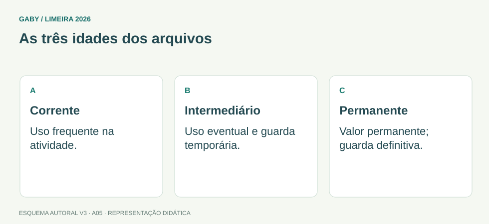

Objetivos do módulo
- Entender ciclo de vida dos documentos.
- Diferenciar arquivos corrente, intermediário e permanente.
- Compreender classificação, temporalidade e eliminação controlada.
- Citar o que determinam os artigos mais cobrados da Lei 8.159/1991 e saber quais foram revogados.
- Distinguir plano de classificação, código de classificação, classe e quadro de arranjo.
- Diferenciar transferência de recolhimento e descrever o procedimento formal de eliminação.
- Explicar política, programa e diagnóstico de gestão documental e o papel da comissão de avaliação.
- Aplicar a gestão documental a documentos digitais: SIGAD, metadados, preservação, digitalização, cópias de segurança e assinatura digital.
As três idades dos arquivos

Descrição em texto do esquema
- Corrente: Uso frequente na atividade.
- Intermediário: Uso eventual e guarda temporária.
- Permanente: Valor permanente; guarda definitiva.
Oficina visual · aplique o esquema
Uma sala está cheia de documentos antigos. A idade dos papéis, sozinha, autoriza o descarte?
Atividade autoral complementar da V3. Registre sua resposta; a resolução está no arquivo de gabarito e revisão.
Mapa do conteúdo
1. Documento e arquivo
Documento registra informação produzida ou recebida no exercício de atividades. Arquivo, em sentido arquivístico, é o conjunto de documentos acumulados organicamente por pessoa ou instituição em função de suas atividades, além de poder designar local/serviço conforme contexto.
As definições desta aula seguem a Lei 8.159/1991 (política nacional de arquivos), o Dicionário Brasileiro de Terminologia Arquivística (DBTA), do Arquivo Nacional, e publicações do Arquivo Nacional e do Conselho Nacional de Arquivos (Conarq). As bancas costumam copiar essas definições e trocar um termo pelo outro; por isso vale conhecer a redação de cada uma.
Documento, suporte e documento arquivístico
- Documento é a unidade de registro de informações, qualquer que seja o suporte ou o formato.
- Suporte é o material no qual as informações são registradas: papel, filme, fita, disco, mídia digital.
- Documento arquivístico é o documento produzido (elaborado ou recebido) no curso de uma atividade prática, como instrumento ou resultado dessa atividade, e retido para ação ou referência.
O que torna um documento arquivístico não é a aparência, o tamanho nem o suporte: é o vínculo com a atividade que o gerou e com quem o produziu (o contexto de produção). O ofício que a Secretaria de Obras recebe pedindo o conserto de uma calçada e a ordem de serviço emitida em resposta são documentos arquivísticos, porque nasceram da atividade da Secretaria. Já os recortes de jornal sobre urbanismo que um servidor junta por gosto pessoal formam uma coleção, não um arquivo.
Arquivo
No DBTA, a palavra arquivo tem quatro sentidos: (1) o conjunto de documentos produzidos e acumulados por uma entidade pública ou privada, pessoa ou família, no desempenho de suas atividades, independentemente da natureza do suporte; (2) a instituição ou o serviço que custodia, trata, conserva e dá acesso a documentos; (3) as instalações onde esse serviço funciona; (4) o móvel destinado à guarda de documentos. Em prova, o sentido principal é o primeiro, que também é o da lei.
Três pontos do art. 2º são cobrados:
- Quem produz: órgãos públicos, instituições de caráter público, entidades privadas e também pessoas físicas. Arquivo não é exclusividade do poder público.
- Por que produz: em decorrência do exercício de atividades. É o vínculo com a atividade que conta.
- Em que suporte: qualquer um. Gravações de áudio, fotografias, planilhas e mensagens eletrônicas produzidas no exercício das atividades integram o arquivo tanto quanto o papel, sem precisar ser impressas.
Organicidade e outras características
Organicidade é a relação natural entre os documentos de um arquivo, em decorrência das atividades da entidade produtora (DBTA). Os documentos não são reunidos artificialmente: cada um se liga aos demais que registram a mesma ação, e essa ligação (a relação orgânica) explica o que cada um significa. Sem organicidade, um conjunto de documentos não é um arquivo.
Exemplo: num processo de compra, a requisição, as cotações, a nota de empenho e a nota fiscal contam, juntas, a história da aquisição. Se alguém retira a nota fiscal e a guarda numa pasta de “notas diversas”, o documento continua existindo, mas perde o contexto que o explica. A característica prejudicada é a organicidade.
O Guia de gestão de documentos do Arquivo Nacional (2025) lista as características do documento arquivístico:
| Característica | O que significa |
|---|---|
| Relação orgânica | Vínculo do documento com os demais documentos do órgão, refletindo suas funções e atividades. |
| Unicidade | Cada documento é único dentro do conjunto documental a que pertence. |
| Confiabilidade | Capacidade de sustentar os fatos que atesta; liga-se ao momento da produção e à veracidade do conteúdo. |
| Autenticidade | O documento é o que diz ser e está livre de adulteração ou outro tipo de corrupção; liga-se à transmissão, à preservação e à custódia. |
| Acessibilidade | O documento pode ser localizado, recuperado, apresentado e interpretado. |
Princípios arquivísticos
| Princípio (DBTA) | O que determina | Exemplo |
|---|---|---|
| Proveniência (ou respeito aos fundos) | O arquivo produzido por uma entidade, pessoa ou família não deve ser misturado aos de outras entidades produtoras. | Os documentos da Secretaria de Saúde não se misturam com os da Secretaria de Educação, mesmo quando tratam do mesmo assunto. |
| Respeito à ordem original | O arquivo deveria conservar o arranjo dado por quem o produziu. | Ao receber as caixas de um setor, o arquivo mantém a sequência em que os processos foram organizados. |
| Integridade arquivística (ou integridade do fundo) | Decorre da proveniência: o fundo deve ser resguardado de misturas com outros, de parcelamentos e de eliminações indiscriminadas. | Não se divide o arquivo de um órgão extinto entre vários interessados. |
Não confunda com o princípio da pertinência (ou temático), pelo qual os documentos seriam reclassificados por assunto sem levar em conta a proveniência e a classificação original. É a lógica oposta à da proveniência: na gestão de documentos, a classificação parte das funções e atividades de quem produziu os documentos (seção 3).
Gênero, espécie e tipo documental
| Conceito (DBTA) | Critério | Exemplos |
|---|---|---|
| Gênero documental | Reúne espécies que se assemelham pelo suporte e pelo formato e exigem tratamento técnico específico. | Textual, iconográfico (imagens), cartográfico (mapas e plantas), audiovisual, eletrônico, micrográfico. |
| Espécie documental | Divisão do gênero que reúne tipos documentais pelo formato. | Ata, ofício, memorando, relatório, decreto, planta. |
| Tipo documental | Divisão da espécie que reúne documentos por características comuns de fórmula, natureza do conteúdo ou técnica de registro. | Dentro da espécie decreto: decreto-lei, decreto legislativo. |
2. Ciclo documental
| Fase | Uso típico | Destino |
|---|---|---|
| Corrente | uso frequente, próximo ao setor produtor | permanece ativo ou transfere |
| Intermediário | uso menos frequente, aguardando prazo | eliminação ou recolhimento |
| Permanente | valor histórico/probatório duradouro | guarda definitiva |
O quadro acima resume as três idades. Para a prova, é preciso separar duas ideias que as bancas misturam: o ciclo de vida (as fases da gestão) e a teoria das três idades (os estágios de guarda).
Gestão de documentos e ciclo de vida
Leia o art. 3º em três partes: são cinco operações (produção, tramitação, uso, avaliação e arquivamento); elas ocorrem nas fases corrente e intermediária; e há dois destinos possíveis, a eliminação ou o recolhimento para guarda permanente. A gestão de documentos, portanto, começa quando o documento é produzido, e não quando a caixa chega ao depósito.
Ciclo de vida dos documentos (ou ciclo vital) é a sucessão de fases por que passam os documentos arquivísticos, da produção até a destinação final, que é a guarda permanente ou a eliminação. O Guia do Arquivo Nacional agrupa o ciclo em três fases:
| Fase da gestão | O que abrange |
|---|---|
| Produção | Elaboração, recebimento e retenção dos documentos em razão das atividades do órgão. Inclui racionalizar a produção: criar só o necessário, com formulários e modelos. |
| Utilização | Tramitação do documento para cumprir sua função administrativa e seu arquivamento depois de cessado o trâmite. Envolve protocolo, classificação, organização e gestão dos arquivos corrente e intermediário. |
| Destinação | Aplicação da decisão, tomada na avaliação, sobre quais documentos serão eliminados e quais irão para a guarda permanente. |
Teoria das três idades
A teoria das três idades é o esquema que representa a passagem dos conjuntos documentais por três estágios de guarda: corrente, intermediário e permanente. O que define a idade é a frequência de uso pelo produtor e os valores do documento, não a data em que ele foi produzido.
| Idade | Critério do art. 8º | Onde costuma ficar | Saída |
|---|---|---|---|
| Corrente (§ 1º) | Documento em curso ou, mesmo sem movimentação, objeto de consulta frequente. | Junto à unidade que o produziu. | Transferência ao intermediário, recolhimento ao permanente ou eliminação, conforme a tabela. |
| Intermediário (§ 2º) | Já não é de uso corrente, mas, por interesse administrativo, aguarda a eliminação ou o recolhimento. | Fora do espaço de produção e tramitação, em depósito próprio. | Eliminação ou recolhimento. |
| Permanente (§ 3º) | Conjuntos de valor histórico, probatório e informativo, preservados definitivamente. | Arquivo permanente (instituição arquivística pública). | Não há: a guarda é definitiva. |
- Um processo encerrado que a unidade ainda consulta toda semana continua corrente: o § 1º inclui o documento sem movimentação que é objeto de consulta frequente. O fim do trâmite, sozinho, não muda a idade.
- O intermediário é guarda temporária: o documento aguarda o prazo e a destinação. Ele não perdeu o valor nem deixou de ser documento público.
- O permanente é guarda definitiva, justificada pelo valor, e não pela idade do papel nem pela frequência de consulta.
- Nem todo documento passa pelas três idades: muitos são eliminados ao fim do prazo corrente ou intermediário, e outros são recolhidos direto do corrente ao permanente.
Transferência e recolhimento
| Operação | De onde para onde | Como se formaliza |
|---|---|---|
| Transferência | Do arquivo corrente para o arquivo intermediário. | Listagem (ou relação) de transferência, enviada com as caixas ao serviço de arquivo. |
| Recolhimento | Do arquivo intermediário, ou direto do corrente, para o arquivo permanente. | Listagem e termo de recolhimento, conforme as normas da instituição arquivística que recebe o acervo. |
Nenhuma das duas é eliminação: ambas mudam o local e a responsabilidade pela guarda. Antes de transferir, a unidade aplica a tabela de temporalidade e separa o que já cumpriu o prazo de guarda no arquivo corrente; o prazo é contado a partir do arquivamento.
A listagem de transferência descreve o que está sendo enviado, para que o arquivo intermediário possa conferir e localizar os documentos. O modelo do Guia do Arquivo Nacional traz: setor de origem, gênero documental, dimensão (quantidade), tipo e número das unidades de arquivamento (as caixas), classificação e descrição do conteúdo de cada unidade, datas-limite, observações, data da transferência e identificação do servidor responsável.
Datas-limite são o início e o término do período coberto por um conjunto de documentos. Uma caixa com guias de remessa emitidas de fevereiro de 2020 a outubro de 2022 tem datas-limite 2020–2022.
3. Classificação e ordenação
Classificação organiza documentos por funções, assuntos ou plano adotado. Ordenação coloca unidades em sequência dentro da classe: alfabética, numérica, cronológica etc. Classificar e ordenar são operações relacionadas, mas não idênticas.
Classificação arquivística e seus instrumentos
Classificar é analisar o documento, identificar a função ou atividade que ele registra e atribuir-lhe o código correspondente. As definições abaixo são do DBTA e do e-ARQ Brasil (Conarq) e costumam aparecer trocadas nas alternativas.
| Termo | Definição | Como reconhecer |
|---|---|---|
| Classificação arquivística | Organização dos documentos de um arquivo ou coleção de acordo com um plano de classificação, código de classificação ou quadro de arranjo. | É a operação de organizar. |
| Plano de classificação | Esquema de distribuição de documentos em classes, elaborado a partir do estudo das estruturas e funções da instituição e da análise do arquivo que ela produz. | É o esquema inteiro. Expressão geralmente adotada em arquivos correntes. |
| Classe | Primeira divisão (primeiro nível hierárquico) de um plano ou código de classificação, normalmente seguida de subclasse, grupo e subgrupo. | É um nível do esquema. |
| Código de classificação | Conjunto de símbolos, normalmente letras e/ou números, derivado de um plano de classificação. | São os símbolos. Como instrumento, serve para classificar todo documento produzido ou recebido no exercício das funções e atividades. |
| Quadro de arranjo | Esquema estabelecido para o arranjo dos documentos de um arquivo, a partir do estudo das estruturas, funções ou atividades da entidade produtora e da análise do acervo. | É o esquema dos arquivos permanentes. |
Exemplo (plano hipotético, só para leitura): a classe 300 reúne “Gestão de materiais”; a subclasse 310, “Aquisição”; o grupo 311, “Pedidos de compra”. O conjunto de todas as classes e subdivisões é o plano; 311 é o código que se anota no pedido de compra; 300 é a classe.
A classificação deve refletir as funções e atividades de quem produziu os documentos. Organizar pelo nome do servidor que guardou a pasta, pela cor ou por códigos inventados a cada caixa rompe a relação orgânica. Classificar pelas funções e atividades serve para manter o vínculo entre os documentos da mesma atividade, recuperar tudo o que se refere a ela e avaliar o grupo em conjunto, de modo que os documentos associados sejam transferidos, recolhidos ou eliminados juntos.
Arquivamento e métodos de arquivamento
Arquivamento é a sequência de operações intelectuais e físicas que visam à guarda ordenada de documentos (DBTA). A parte intelectual é decidir onde o documento se encaixa; a parte física é colocá-lo na pasta ou caixa certa. A palavra também designa o ato da autoridade que determina a guarda de um documento depois de cessada a tramitação. Não confunda com avaliação, que é a análise dos documentos segundo os valores que lhes são atribuídos.
O método de arquivamento é escolhido conforme a maneira como o documento é mais procurado. A publicação do Conarq para arquivos municipais lista os métodos básicos:
| Método | Elemento principal de busca | Exemplo |
|---|---|---|
| Alfabético | O nome ou o termo que representa o conteúdo. | Pastas funcionais ordenadas pelo nome do servidor. |
| Geográfico | A procedência, o local de origem ou de destino (cidade, estado, país ou unidade do órgão). | Correspondência das escolas separada por bairro. |
| Numérico simples | O número do documento ou o número dado à pasta na ordem de entrada. | Pastas numeradas 0001, 0002, 0003, com um índice para localizar o nome. |
| Numérico cronológico | O número do documento associado à data. | Processos ordenados por número e ano: 148/2025, 149/2025, 001/2026. |
| Ideográfico | O assunto, ordenado de forma alfabética (dicionária ou enciclopédica) ou numérica (decimal ou duplex). | Pastas por assunto: Frota, Licitações, Material de consumo. |
Protocolo
Protocolo é o serviço encarregado do recebimento, registro, classificação, distribuição, controle da tramitação e expedição de documentos (DBTA). Tramitação (ou movimentação) é o curso do documento desde a produção ou o recebimento até o cumprimento de sua função administrativa. O protocolo atua na fase de utilização e alimenta o arquivo corrente: o documento que entra já deve ser registrado e classificado.
4. Temporalidade
Tabela de temporalidade define prazos de guarda e destinação com base em valores administrativos, legais, fiscais e históricos. Não se elimina documento apenas porque “parece antigo”.
Avaliação e valores dos documentos
Avaliação é o processo de análise dos documentos de arquivo que estabelece os prazos de guarda e a destinação, de acordo com os valores que lhes são atribuídos (DBTA).
| Valor | Definição | Consequência |
|---|---|---|
| Primário | Interesse do documento para a própria entidade produtora, por sua utilidade administrativa, legal e fiscal. | Justifica os prazos de guarda nos arquivos corrente e intermediário. |
| Secundário | Interesse para a entidade produtora e para outros usuários, por utilidade diferente daquela para a qual o documento foi produzido. | Quando reconhecido, leva à guarda permanente. |
| Permanente | Valor probatório ou informativo que justifica a guarda definitiva; também chamado valor arquivístico ou histórico. | O documento é recolhido e não pode ser eliminado. |
A avaliação olha para os valores e para a necessidade de uso dos conjuntos documentais. O estado físico do papel, o volume das caixas ou a falta de consultas recentes não definem prazo nem destino: papel danificado pede conservação, e documento pouco consultado pode ter valor permanente.
Prazo de guarda e tabela de temporalidade
Prazo de guarda é o tempo, definido na tabela e baseado em estimativas de uso, em que os documentos ficam no arquivo corrente ou no intermediário; ao fim dele, a destinação é efetivada. A tabela de temporalidade e destinação é o instrumento, aprovado por autoridade competente, que determina os prazos de guarda e a destinação (eliminação ou guarda permanente) de cada conjunto documental.
Código de classificação e tabela trabalham juntos: o código identifica os conjuntos pelas funções e atividades; a tabela estabelece os prazos de guarda e a destinação dos conjuntos identificados no código. Os prazos estão na tabela, não no código.
Leitura de uma linha de tabela (valores hipotéticos): “311 Pedidos de compra · corrente: 2 anos · intermediário: 4 anos · destinação final: eliminação”. Um pedido arquivado em maio de 2022 fica na unidade até maio de 2024, é transferido ao arquivo intermediário e pode entrar no procedimento de eliminação a partir de maio de 2028.
Na rotina do setor, aplicar a tabela significa revisar periodicamente as pastas, separar os documentos ativos dos inativos, transferir os que cumpriram o prazo corrente e encaminhar os demais ao destino previsto. É isso que fixa o tempo e o local de guarda e evita tanto o acúmulo quanto o descarte arbitrário.
Instrumentos para atividades-meio e atividades-fim
Atividade-meio é a que dá apoio à realização das atividades-fim da instituição. Atividade-fim (ou finalística) é a desenvolvida em decorrência da finalidade da instituição. Gerir pessoal e comprar material são atividades-meio em qualquer órgão; matricular alunos é atividade-fim de uma secretaria de educação.
Por serem comuns, as atividades-meio podem ter código e tabela únicos para vários órgãos: no Poder Executivo federal, esses instrumentos são aprovados pelo Arquivo Nacional e aplicados por todos. Para as atividades-fim, cada órgão elabora código e tabela próprios, adequados às suas especificidades, e os submete à aprovação da instituição arquivística. Copiar a tabela de outro órgão sem verificar se ela serve, ou classificar tudo como “assuntos diversos”, é erro.
Comissão Permanente de Avaliação de Documentos (CPAD)
A avaliação não é feita por uma pessoa só. A CPAD é a equipe multidisciplinar que orienta e realiza a análise, a avaliação e a seleção dos documentos produzidos e acumulados pelo órgão, para garantir a destinação correta. Ela é multidisciplinar porque decidir valores, prazos e destinação exige conhecimentos diferentes: a publicação do Conarq para arquivos municipais recomenda arquivistas, representantes das áreas administrativa, financeira e jurídica e representantes das unidades cujos documentos estão sendo avaliados.
Na administração federal, a comissão é regida hoje pelo Decreto 12.939/2026: finalidade (art. 10), competências (art. 11, entre elas elaborar o código e a tabela das atividades-fim e orientar a aplicação dos instrumentos) e composição mínima (art. 12: entre outros, o responsável pelos serviços arquivísticos, que a preside, servidores das unidades cujos documentos são avaliados e uma pessoa com formação em História). Esse decreto revogou os arts. 1º a 16 do Decreto 10.148/2019 (art. 20); antes, a matéria estava no art. 18 do Decreto 4.073/2002, revogado pelo Decreto 10.148/2019. Materiais mais antigos ainda citam esses dispositivos.
5. Eliminação e descarte
Eliminação deve obedecer normas, autorizações e procedimentos, preservando sigilo e prova da operação quando exigido. O edital menciona descarte e incineração conforme normas de temporalidade: a ênfase é que destruição é controlada, não arbitrária.
Eliminação é a destruição de documentos que, na avaliação, foram considerados sem valor permanente (DBTA). Ela é uma etapa normal da gestão, porque é impossível guardar tudo, mas só acontece depois da avaliação e por procedimento formal.
O art. 9º exige autorização da instituição arquivística pública da esfera correspondente: para um órgão municipal, o arquivo público do município. Falta de espaço, antiguidade dos papéis, ordem verbal de um colega ou decisão de quem precisa da estante não substituem essa autorização.
O art. 10 protege os documentos de valor permanente: eles não podem ser vendidos, doados ou cedidos em propriedade (inalienáveis), e o decurso do tempo não faz o poder público perder o direito sobre eles (imprescritíveis). O Decreto 4.073/2002, art. 17, § 4º, repete a regra para os documentos de valor permanente das empresas em desestatização: são inalienáveis e não estão sujeitos a usucapião. Ficar anos sem consulta não retira essa proteção.
Passo a passo da eliminação
A Resolução Conarq 40/2014, com a redação da Resolução 44/2020, fixa o procedimento para os órgãos e entidades do Sistema Nacional de Arquivos (Sinar), que reúne também os arquivos municipais dos Poderes Executivo e Legislativo (Decreto 4.073/2002, art. 12, VII):
- Avaliação e seleção pela CPAD, com base no código de classificação e na tabela de temporalidade aprovados pela instituição arquivística pública (arts. 1º e 2º). É a aprovação desses instrumentos que dá a autorização prevista no art. 9º da Lei 8.159/1991.
- Listagem de Eliminação de Documentos (LED), elaborada pela CPAD e submetida à autorização do titular do órgão (art. 2º-A). A LED identifica formalmente os conjuntos que serão eliminados.
- Edital de Ciência de Eliminação de Documentos, publicado em periódico oficial; o município que não tem periódico oficial pode usar outro veículo de divulgação local (art. 3º).
- Eliminação por fragmentação manual ou mecânica, pulverização, desmagnetização ou reformatação, de modo que a descaracterização não possa ser revertida, sob supervisão de responsável designado (art. 5º).
- Termo de Eliminação de Documentos, que registra o ato, com cópia para a instituição arquivística pública (art. 4º).
A mesma resolução exige que o órgão tenha CPAD constituída para eliminar (art. 1º, parágrafo único) e manda que documentos que não constam da tabela de temporalidade só sejam eliminados com autorização excepcional da instituição arquivística pública (art. 2º, § 2º).
Consequências práticas:
- Cumprir o prazo de guarda é condição para eliminar, mas não autoriza o servidor a jogar os documentos no lixo comum. Mesmo quando a tabela indica eliminação, é preciso LED, autorização, edital e termo.
- Usar documentos antigos como rascunho, distribuí-los a servidores ou retirar as etiquetas e descartar é eliminação irregular.
- A LED não se confunde com a listagem de transferência nem com a de recolhimento, que acompanham documentos que mudam de arquivo, e não documentos que serão destruídos.
- A Resolução 40/2014 não lista a incineração entre as formas de eliminação. Quando o edital fala em descarte e incineração “conforme normas de temporalidade”, o ponto cobrado é o mesmo: destruição só com avaliação, prazo cumprido e procedimento formal.
Na administração federal, o Decreto 12.939/2026 atribui ao Arquivo Nacional a autorização para eliminar, com possibilidade de delegação à autoridade máxima do órgão (art. 16), e exige LED aprovada pela CPAD e pela autoridade máxima, seguida de edital publicado no Diário Oficial da União (art. 17).
Quem desfigura ou destrói documento de valor permanente, ou considerado de interesse público e social, fica sujeito a responsabilidade penal, civil e administrativa (Lei 8.159/1991, art. 25).
6. Conservação e documentos digitais
Conservação inclui condições ambientais, manuseio e proteção contra riscos. Em documentos digitais, integridade, autenticidade, acesso, cópias de segurança e formatos sustentáveis também importam.
Preservação, conservação e restauração
| Termo (DBTA) | Definição |
|---|---|
| Preservação | Prevenção da deterioração e de danos em documentos, por meio de controle ambiental adequado e de tratamento físico ou químico. |
| Conservação | Promoção da preservação e da restauração dos documentos. |
| Restauração | Procedimentos específicos para recuperar e reforçar documentos deteriorados e danificados. |
| Acondicionamento | Embalagem ou guarda de documentos visando à sua preservação e ao acesso (caixas, pastas, envelopes). |
| Armazenamento | Guarda de documentos em depósito. |
| Higienização | Retirada de poeira e outros resíduos, por técnicas apropriadas, para preservar os documentos. |
Preservação desde a produção
A preservação é uma função que faz parte da gestão de documentos e vai da produção à destinação final. Ela não se limita a intervir no documento já rasgado ou ilegível: inclui planejamento e prevenção. Pensar em preservar só depois do dano é a postura que o Guia do Arquivo Nacional corrige. Os cuidados envolvem escolha do suporte, manuseio, higienização, pequenos reparos, acondicionamento, armazenamento, segurança e controle ambiental, e o planejamento considera o prazo de guarda previsto na tabela de temporalidade: documento que ficará décadas no arquivo intermediário ou irá para a guarda permanente exige mais cuidado desde o início.
Medidas de conservação preventiva recomendadas nas publicações do Conarq e do Arquivo Nacional:
- proteger os depósitos contra incêndio, inundação, poluição, excesso de umidade e de luz solar;
- controlar temperatura e umidade: para depósitos de guarda permanente de documentos em papel, a referência é umidade relativa de 50% e temperatura de 20 °C, com pouca variação diária;
- usar mobiliário, caixas e pastas adequados ao suporte e ao formato, sempre maiores que os documentos que abrigam;
- não armazenar documento diretamente sobre o chão;
- manter política de segurança e plano de emergência para fogo, água, insetos, roubo e vandalismo.
Microfilmagem e digitalização
Microfilmagem é a produção de imagens fotográficas de um documento em formato altamente reduzido. Digitalização é a conversão de um documento para o formato digital por meio de dispositivo apropriado, como um escâner. As recomendações do Conarq para digitalização apontam que o representante digital amplia o acesso e restringe o manuseio dos originais. Os cuidados com documentos digitais e digitalizados estão na seção 9.
7. Lei 8.159/1991 artigo por artigo
A Lei 8.159, de 8 de janeiro de 1991, dispõe sobre a política nacional de arquivos públicos e privados. O quadro resume os dispositivos cobrados, conforme o texto compilado publicado pelo Planalto.
| Dispositivo | O que determina |
|---|---|
| Art. 1º | É dever do Poder Público a gestão documental e a proteção especial a documentos de arquivos, como instrumento de apoio à administração, à cultura e ao desenvolvimento científico e como elementos de prova e informação. |
| Art. 2º | Conceito de arquivo: conjuntos de documentos produzidos e recebidos no exercício de atividades, qualquer que seja o suporte da informação ou a natureza dos documentos (seção 1). |
| Art. 3º | Conceito de gestão de documentos: produção, tramitação, uso, avaliação e arquivamento em fase corrente e intermediária, visando à eliminação ou ao recolhimento (seção 2). |
| Art. 4º | Direito de todos a receber dos órgãos públicos informações de interesse particular, coletivo ou geral contidas em documentos de arquivos, ressalvado o sigilo. |
| Art. 5º | A Administração Pública franqueará a consulta aos documentos públicos. |
| Art. 6º | Direito de indenização pelo dano material ou moral decorrente da violação do sigilo, sem prejuízo das ações penal, civil e administrativa. |
| Art. 7º, caput | Arquivos públicos são os conjuntos de documentos produzidos e recebidos, no exercício de suas atividades, por órgãos públicos federais, estaduais, do Distrito Federal e municipais, em decorrência de funções administrativas, legislativas e judiciárias. |
| Art. 7º, § 1º | Também são públicos os conjuntos de documentos produzidos e recebidos por instituições de caráter público e por entidades privadas encarregadas da gestão de serviços públicos, no exercício de suas atividades. |
| Art. 7º, § 2º | A cessação de atividades de instituições públicas e de caráter público implica o recolhimento de sua documentação à instituição arquivística pública ou a sua transferência à instituição sucessora. |
| Art. 8º | Os documentos públicos são identificados como correntes, intermediários e permanentes (seção 2). |
| Art. 9º | Eliminação de documentos públicos só com autorização da instituição arquivística pública da respectiva esfera (seção 5). |
| Art. 10 | Documentos de valor permanente são inalienáveis e imprescritíveis (seção 5). |
| Art. 11 | Arquivos privados são os conjuntos de documentos produzidos ou recebidos por pessoas físicas ou jurídicas, em decorrência de suas atividades. |
| Art. 12 | Arquivos privados podem ser identificados pelo Poder Público como de interesse público e social, se considerados conjuntos de fontes relevantes para a história e o desenvolvimento científico nacional. |
| Art. 13 | Arquivos privados assim identificados não podem ser alienados com dispersão ou perda da unidade documental, nem transferidos para o exterior. Na alienação, o Poder Público tem preferência na aquisição (parágrafo único). |
| Art. 17 | A administração da documentação pública ou de caráter público cabe às instituições arquivísticas federais, estaduais, do Distrito Federal e municipais. São arquivos municipais o do Poder Executivo e o do Poder Legislativo (§ 4º). |
| Art. 21 | Legislação estadual, do Distrito Federal e municipal define os critérios de organização e vinculação dos arquivos estaduais e municipais, a gestão e o acesso aos documentos, observadas a Constituição e a própria Lei 8.159/1991. |
| Arts. 22 a 24 | Revogados pela Lei 12.527/2011 (ver abaixo). |
| Art. 25 | Responsabilidade penal, civil e administrativa de quem desfigurar ou destruir documentos de valor permanente ou considerados de interesse público e social. |
| Art. 26 | Cria o Conselho Nacional de Arquivos (Conarq), vinculado ao Arquivo Nacional, que define a política nacional de arquivos como órgão central do Sistema Nacional de Arquivos (Sinar). |
Arquivos públicos: quem produz e o que acontece quando a atividade cessa
O critério do art. 7º é a atividade pública, e não apenas a natureza de quem produz. Por isso o § 1º alcança a entidade privada encarregada da gestão de serviço público: os documentos que uma concessionária de transporte coletivo produz ao prestar o serviço concedido são arquivos públicos, embora a empresa seja privada. O suporte e o papel timbrado são irrelevantes.
O § 2º cuida da continuidade da custódia. Quando uma instituição pública ou de caráter público encerra as atividades, sua documentação tem dois caminhos: recolhimento à instituição arquivística pública ou transferência à instituição sucessora. O encerramento não autoriza descartar, vender ou repartir os documentos entre ex-servidores.
Arquivos privados de interesse público e social
O arquivo de uma pessoa, de uma família ou de uma empresa é privado (art. 11). Se for fonte relevante para a história e o desenvolvimento científico nacional, o Poder Público pode identificá-lo como de interesse público e social (art. 12). A partir daí valem os limites do art. 13: o arquivo até pode ser alienado, mas não com dispersão ou perda da unidade documental (vender as cartas a um comprador e as fotografias a outro, por exemplo), nem transferido para o exterior; e o Poder Público tem preferência na aquisição.
Acesso à informação e sigilo
O art. 4º da Lei 8.159/1991 repete essa garantia para as informações “contidas em documentos de arquivos” e acrescenta à ressalva o sigilo imprescindível à inviolabilidade da intimidade, da vida privada, da honra e da imagem das pessoas, valores protegidos pelo art. 5º, X, da Constituição. A regra, portanto, é o acesso; o sigilo é exceção, limitada a essas hipóteses.
Quem viola o sigilo de documentos responde em mais de uma via ao mesmo tempo: indenização pelo dano material ou moral e, além dela, ações penal, civil e administrativa. A expressão “sem prejuízo” significa que uma via não exclui as outras. Está errada a afirmação de que cabe apenas a ação administrativa.
O que a Lei de Acesso à Informação revogou
A Lei 12.527/2011 (Lei de Acesso à Informação), art. 46, II, revogou os arts. 22 a 24 da Lei 8.159/1991, que formavam o capítulo sobre acesso e sigilo dos documentos públicos: o direito de acesso pleno (art. 22), as categorias de sigilo fixadas por decreto e os prazos máximos de restrição de 30 e de 100 anos (art. 23) e a exibição reservada de documento sigiloso por ordem judicial (art. 24). Hoje o acesso, a classificação de informações sigilosas e os prazos de restrição são regidos pela Lei 12.527/2011.
A lei e o município
Pelo art. 21, cabe à legislação municipal definir como os arquivos do município se organizam e a que órgão se vinculam, e como se dão a gestão e o acesso aos documentos, sempre observadas a Constituição e a Lei 8.159/1991. Normas e manuais federais servem de referência técnica, mas não substituem a regulamentação local; e esta não pode contrariar a lei nacional, por exemplo dispensando a autorização do art. 9º para eliminar documentos.
8. Planejamento da gestão documental
Esta seção segue o Guia de gestão de documentos do Arquivo Nacional (2025), escrito para o Poder Executivo federal e usado como referência técnica pelas demais esferas.
Política e programa de gestão de documentos
| Instrumento | O que é | Pergunta que responde |
|---|---|---|
| Política de gestão de documentos (ou política de gestão arquivística) | Instrumento institucional que define as diretrizes e as responsabilidades que orientam programas, projetos, planos e procedimentos. Depende do apoio da direção superior. | O que a instituição pretende e quem responde por quê? |
| Programa de gestão de documentos | Conjunto de atividades, ações e procedimentos adotados de forma integrada para gerenciar os documentos ao longo de todo o ciclo de vida. | Como a política é posta em prática? |
A política orienta; o programa executa. A política norteia o desenvolvimento do programa, e o programa não dispensa diretrizes nem responsáveis. Inverter os papéis (dizer que o programa define princípios e a política detalha rotinas) é a troca mais comum em prova.
As responsabilidades são distribuídas entre a direção superior (apoia e destina recursos), os profissionais de arquivo (planejam e implantam o programa), os gerentes de unidades, os usuários finais (produzem e usam os documentos conforme o programa) e os gestores de tecnologia da informação.
Diagnóstico da situação do arquivo
O primeiro passo para montar um programa é o diagnóstico arquivístico: o levantamento e a análise da situação, para planejar com base na realidade. Ele identifica as atividades de gestão de documentos em curso, os ambientes e as condições de armazenamento, os problemas e os custos, em quatro dimensões: política (competências do órgão), administrativa (como o órgão se organiza), arquivística (onde estão e quais são os documentos, pessoal e material disponíveis) e tecnológica (recursos de informática).
Entre os elementos verificados estão as normas que regulam as atividades do órgão, a estrutura administrativa e tecnológica, os recursos humanos e materiais, os instrumentos arquivísticos existentes e a identificação e medição do acervo acumulado sem tratamento. Reorganizar o arquivo, comprar um sistema ou descartar caixas antes de conhecer volume, condições, fluxos e recursos é decidir sem base.
Massa documental acumulada
Massa documental acumulada (MDA) é o conjunto volumoso de documentos que o órgão acumulou ao longo dos anos sem o devido tratamento técnico (sem classificação, avaliação ou destinação), em geral guardado em locais inadequados. Ela resulta de ignorar as normas de gestão de documentos e também pode surgir em meio digital, quando sistemas produzem documentos que ninguém classifica nem avalia.
Desorganização não prova falta de valor. O tratamento adequado é planejado: diagnosticar o acervo, identificar os conjuntos documentais e seu produtor, classificá-los, avaliá-los com a tabela de temporalidade e só então dar a destinação (eliminação formal, transferência ou recolhimento). Eliminar uma parte ao acaso, ou apenas ordenar as caixas por tamanho, não resolve o problema.
9. Documentos digitais, sistemas e preservação digital
Gestão integrada de documentos digitais e não digitais
A gestão de documentos não muda de natureza porque o suporte mudou. Ela deve ser integrada, alcançando todos os documentos da instituição independentemente do suporte ou do formato, e o programa de gestão é um só para documentos digitais e não digitais. Integrar não significa imprimir tudo, nem apagar os originais digitais, nem ignorar o que está no computador: significa aplicar as mesmas regras (classificar, avaliar, destinar) respeitando as especificidades de cada suporte. O ambiente em que convivem documentos digitais e não digitais é chamado de híbrido.
SIGAD, GED e sistemas de negócio
| Sistema | O que é | Observação |
|---|---|---|
| SIGAD (sistema informatizado de gestão arquivística de documentos) | Sistema que controla o ciclo de vida dos documentos arquivísticos: captura, tramitação, utilização e arquivamento até a destinação final (eliminação ou recolhimento). | Aplica procedimentos de gestão arquivística; não é um simples depósito de arquivos. Gerencia documentos digitais, não digitais e híbridos. |
| GED (gerenciamento eletrônico de documentos) | Conjunto de tecnologias para organizar informação não estruturada, com captura, gerenciamento, armazenamento e distribuição. | Organiza e distribui informação; a gestão arquivística é feita pelo SIGAD ou pela integração com ele. |
| Sistema de negócio | Sistema cuja função principal é apoiar uma atividade específica (folha de pagamento, finanças, matrícula escolar, prontuários) e que produz e mantém dados e documentos sobre ela. | Os documentos que produz também são arquivísticos e precisam de gestão. |
- Armazenar não é gerir. Um disco com pastas de nomes livres, ou a simples digitalização do papel, não faz um SIGAD. O que o caracteriza são os controles ao longo do ciclo de vida: registro, classificação, prazos de guarda, destinação.
- Documentos em papel no SIGAD. Para os documentos não digitais, o SIGAD guarda apenas o registro, nos metadados, das informações descritivas e das ações de gestão: número de protocolo, código de classificação, data de arquivamento, responsável pelo arquivamento. O papel continua na caixa; registrar não é digitalizar. Para os documentos digitais, o SIGAD guarda os próprios documentos.
- Sistemas de negócio. O fato de o sistema servir a uma atividade (pagar, matricular, atender) não dispensa a gestão documental. Há dois caminhos: integrar o sistema a um SIGAD ou incorporar a ele os requisitos arquivísticos necessários. O modelo de requisitos de referência é o e-ARQ Brasil, do Conarq.
- Metadados são dados estruturados que descrevem os documentos e permitem encontrá-los, gerenciá-los, compreendê-los e preservá-los ao longo do tempo: quem produziu, quando, em que atividade, com que classificação.
- Troca de sistema. Sistemas podem e devem evoluir, mas o sistema precisa ser capaz de exportar os documentos com seus metadados, em formatos que permitam a interoperabilidade. Exportar só os arquivos, sem os metadados que registram seu contexto, não basta: o documento chega ao novo sistema sem a informação que o explica.
- Profissionais de arquivo desde o início. Os profissionais de arquivo devem participar da concepção, do projeto, da implantação e do gerenciamento dos sistemas, ao lado da equipe de tecnologia, para definir e conferir os requisitos e os metadados que garantem confiabilidade, autenticidade e acesso. Chamá-los só para validar uma compra já feita é tarde demais.
Preservação digital
O documento digital depende de software, hardware e formato de arquivo para ser lido, e essas condições mudam com o tempo: programas saem de linha, mídias se degradam, equipamentos de leitura deixam de existir (obsolescência). Por isso a preservação digital também começa na produção e exige planejamento: escolher formatos e mídias apropriados, definir software e hardware, monitorar o acervo, manter os equipamentos necessários à leitura e planejar as intervenções antes que o acesso se perca. A existência do arquivo gravado não garante que ele poderá ser aberto no futuro.
O Repositório Arquivístico Digital Confiável (RDC-Arq) é o ambiente apontado como mais apropriado para a preservação de longo prazo de documentos digitais e o ambiente típico dos arquivos permanentes. Reúne hardware, software, metadados, infraestrutura organizacional e procedimentos, e não se resume a um espaço de armazenamento. Não confunda os papéis: a gestão arquivística é feita pelo SIGAD; a preservação de longo prazo, pelo RDC-Arq, que deve cumprir requisitos próprios de repositório confiável (Resolução Conarq 43). Os dois podem funcionar em conjunto, mas o SIGAD não substitui o repositório; uma pasta temporária ou a caixa de e-mail de um servidor, menos ainda.
| Conceito | O que é | Ideia-chave |
|---|---|---|
| Cadeia de preservação | Sistema de controles que se estende por todo o ciclo de vida dos documentos, para assegurar sua autenticidade ao longo do tempo. | Toda intervenção (mudança de suporte, conversão de formato, migração de sistema) deve ser registrada e controlada. |
| Cadeia de custódia | Linha contínua de custodiadores dos documentos, do produtor ao legítimo sucessor, que assegura que os documentos são os mesmos desde o início e não foram alterados. | Refere-se às pessoas e instituições responsáveis pela guarda. A custódia é da instituição, não do sistema. |
Exemplo: ao converter gravações antigas para um formato atual, registra-se o que foi feito, quando e por quem (cadeia de preservação). Ao entregar o acervo de um órgão extinto ao seu sucessor, registra-se quem entregou e quem recebeu (cadeia de custódia). As duas sustentam a presunção de autenticidade.
Minutas, cópias e originais
Minuta é a versão preliminar de um documento, sujeita a aprovação. Original é a versão final, já na forma apropriada. Cópia é o resultado da reprodução de um documento. No procedimento de eliminação, eliminam-se as cópias cujo original está no mesmo conjunto; no meio digital, onde é fácil duplicar e os arquivos se parecem, é preciso verificar antes se cada documento é minuta, cópia ou original. Tamanho, nome ou data de criação do arquivo, isolados, não respondem a essa pergunta.
Digitalização e documentos digitalizados
O documento digitalizado é um representante digital de um documento que nasceu em outro suporte. Ao digitalizar processos, o procedimento básico é conferir a legibilidade da imagem, registrar os metadados (data, responsável, dados do processo) e vincular o arquivo ao número do processo e à sua classificação.
Do art. 10 saem duas regras de manutenção. Primeira: o documento digitalizado é protegido contra alteração e destruição e, quando cabível, contra acesso e reprodução não autorizados; não existe liberdade para alterá-lo, pois isso comprometeria a integridade. Segunda: o armazenamento deve indexar metadados que permitam localizar e gerenciar o documento e conferir como a digitalização foi feita.
Digitalizar não autoriza, por si, eliminar o original. O Decreto 10.278/2020 admite o descarte do documento físico depois da digitalização feita conforme suas regras, salvo o de valor histórico (art. 9º), mas manda os entes públicos observar a Lei 8.159/1991 e as tabelas de temporalidade e destinação aprovadas pelas instituições arquivísticas (art. 12). Na prática do órgão público, o original em papel continua fazendo parte do arquivo depois de digitalizado e só pode ser eliminado se estiver classificado, se a tabela previr a eliminação e pelo procedimento formal da seção 5. Triturar o papel logo após escanear, sem nem conferir a imagem, é erro duplo.
Cópias de segurança
Cópia de segurança (backup) é a cópia feita para restaurar as informações em caso de perda ou destruição do original (e-ARQ Brasil). Para cumprir essa função, ela fica em ambiente seguro e distinto daquele onde está a informação original (Guia do Arquivo Nacional), como outra mídia ou um serviço em nuvem separado do sistema principal, e precisa ser refeita periodicamente: uma cópia antiga não contém o que foi produzido depois dela. Um único computador, uma pasta “Antigos” no mesmo disco ou o pen drive pessoal de um servidor não protegem: a mesma falha, ou o mesmo ataque, atinge o original e a cópia, ou a instituição perde o controle sobre ela.
Nomes de arquivos e controle de versões
Em pastas compartilhadas, a localização depende de um padrão de nomes de arquivos adotado por todos. As recomendações do Conarq para identificadores de arquivos digitais pedem que o nome seja único, estruturado sempre da mesma forma, curto e sem símbolos ou espaços que dificultem a interoperabilidade, com zeros à esquerda nas partes numéricas, letras minúsculas e extensão. Um padrão que combine data, número do processo e assunto atende a isso. Exemplo: data 20260314, processo 0458-2026, assunto limpeza e versão v02 formam o nome 20260314_0458-2026_limpeza_v02.pdf. As informações postas no nome também devem constar dos metadados.
Práticas que atrapalham: nomear só com o primeiro nome de quem salvou; jogar tudo numa pasta genérica única; salvar o mesmo arquivo em várias pastas sem relação entre si; guardar em pastas pessoais, fora do plano de classificação; e substituir o conteúdo sem registrar a mudança. Controle de versão é o conjunto de operações que permite gerenciar as versões de um documento digital: cada revisão é uma nova versão identificada, e não uma sobrescrita silenciosa.
Autenticidade e assinatura digital
As definições abaixo são do glossário do e-ARQ Brasil (Conarq). Em prova, costumam aparecer lado a lado para que o candidato associe cada uma ao termo certo.
| Termo | Definição |
|---|---|
| Autenticidade | Qualidade de um documento ser o que diz ser, livre de adulteração ou de qualquer outro tipo de corrupção. Compõe-se de identidade e integridade. |
| Integridade | Estado do documento completo, que não sofreu corrupção nem alteração não autorizada e não documentada. |
| Assinatura digital | Modalidade de assinatura eletrônica, resultado de uma operação matemática que utiliza algoritmos de criptografia e permite aferir, com segurança, a origem e a integridade do documento. |
| Criptografia | Método de codificação de dados segundo algoritmo específico e chave secreta, de modo que só usuários autorizados restabeleçam a forma original. |
| Certificado digital | Registro eletrônico assinado que comprova a relação entre um elemento criptográfico e uma pessoa física ou jurídica. |
| Autoridade certificadora (AC) | Organização que emite, renova ou revoga certificados digitais de outras autoridades certificadoras ou de titulares finais. |
A assinatura digital é única para cada documento, comprova a autoria, permite verificar a integridade e assegura o “não repúdio”: em princípio, só o emitente tem acesso à chave privada que gerou a assinatura. Ela é um meio de autenticação. A autenticidade, porém, é mais ampla: depende também de procedimentos de gestão e das cadeias de preservação e de custódia mantidos ao longo do tempo.
Exemplos resolvidos passo a passo
Exemplo 1
Situação: Documento usado diariamente pelo setor. Em qual fase?
Exemplo 2
Situação: Documento sem uso frequente, aguardando prazo para destinação.
Exemplo 3
Situação: Servidor quer destruir caixas antigas sem consultar tabela.
Exemplo 4 · prazo de guarda, transferência e eliminação
Situação: A tabela de temporalidade de um município (valores hipotéticos) prevê, para as requisições de material de consumo, 2 anos no arquivo corrente e 4 anos no intermediário, com eliminação ao final. Um lote foi arquivado em março de 2021. Em novembro de 2026, o chefe do almoxarifado quer triturar o lote para liberar a estante.
Exemplo 5 · plano, classe, código e quadro de arranjo
Situação: Num plano hipotético, 500 é “Gestão de frota”, 510 é “Manutenção de veículos” e 511 é “Ordens de serviço de oficina”. Um colega afirma: “511 é o plano de classificação, e 500 é o quadro de arranjo”.
Exemplo 6 · órgão extinto
Situação: Uma autarquia municipal de turismo é extinta por lei, e suas funções passam à Secretaria de Cultura. O responsável pelo encerramento propõe vender a um colecionador as fotografias antigas, já avaliadas como de valor permanente, e entregar o restante das caixas aos ex-servidores.
Exemplo 7 · digitalização de processos
Situação: Um setor digitaliza processos encerrados. Os arquivos são salvos como “scan001”, “scan002” no computador do chefe, e a equipe pretende triturar o papel no dia seguinte.
Pegadinhas e erros frequentes
- Achar que arquivo permanente é “documento velho”.
- Confundir classificação com ordenação.
- Eliminar por falta de espaço sem temporalidade.
- Desconsiderar gestão de documentos digitais.
- Dizer que só o papel forma arquivo: o art. 2º da Lei 8.159/1991 abrange qualquer suporte.
- Classificar como intermediário o documento sem movimentação que ainda é objeto de consulta frequente: ele é corrente.
- Trocar as fases do ciclo de vida (produção, utilização, destinação) pelas três idades (corrente, intermediária, permanente).
- Afirmar que todo documento passa obrigatoriamente pelas três idades.
- Confundir transferência (corrente para intermediário) com recolhimento (para o permanente).
- Trocar as definições: classe é nível, código são símbolos, plano é o esquema dos arquivos correntes, quadro de arranjo é o esquema dos permanentes.
- Pensar que os prazos de guarda estão no código de classificação: estão na tabela de temporalidade.
- Achar que prazo de guarda cumprido autoriza jogar no lixo: ainda faltam a Listagem de Eliminação de Documentos, a autorização, o edital e o termo.
- Tratar os arts. 4º e 6º da Lei 8.159/1991 como revogados: a Lei 12.527/2011 revogou apenas os arts. 22 a 24.
- Limitar a violação de sigilo à esfera administrativa: há indenização e ações penal, civil e administrativa.
- Inverter política (diretrizes e responsabilidades) e programa (ações e procedimentos).
- Concluir que massa documental desorganizada não tem valor.
- Tratar o SIGAD como simples armazenamento, ou achar que ele digitaliza automaticamente o papel.
- Confundir SIGAD (gestão) com RDC-Arq (preservação de longo prazo), ou cadeia de preservação com cadeia de custódia.
- Eliminar o original em papel só porque foi digitalizado, ou admitir que o documento digitalizado seja alterado livremente.
- Chamar de cópia de segurança a cópia guardada no mesmo computador ou em pen drive pessoal.
Resumo de prova
- Corrente = uso frequente.
- Intermediário = aguarda destinação.
- Permanente = guarda definitiva por valor.
- Classificação ≠ ordenação.
- Temporalidade define prazo e destino.
- Eliminação precisa ser autorizada e segura.
- Arquivo (art. 2º) = documentos produzidos e recebidos no exercício de atividades, em qualquer suporte.
- Gestão de documentos (art. 3º) = produção, tramitação, uso, avaliação e arquivamento, até a eliminação ou o recolhimento.
- Fases do ciclo de vida: produção, utilização, destinação.
- Corrente (art. 8º, § 1º) inclui o documento sem movimentação de consulta frequente.
- Permanente (§ 3º) = valor histórico, probatório e informativo.
- Transferência → intermediário; recolhimento → permanente.
- Entidade privada que gere serviço público produz arquivo público (art. 7º, § 1º).
- Cessação de atividades: recolhimento ou transferência à sucessora (art. 7º, § 2º).
- Eliminação: autorização da instituição arquivística pública (art. 9º).
- Valor permanente: inalienáveis e imprescritíveis (art. 10).
- Arquivo privado de interesse público e social: sem dispersão nem saída do país (arts. 12 e 13).
- Art. 21: legislação estadual, distrital e municipal organiza os respectivos arquivos.
- Arts. 22 a 24 revogados pela Lei 12.527/2011.
- Organicidade = relação entre os documentos e as atividades que os geraram.
- Plano = esquema em classes; código = símbolos; classe = primeiro nível; quadro de arranjo = permanente.
- Avaliação define prazos e destinação pelos valores; é trabalho da CPAD, multidisciplinar.
- Código identifica os conjuntos; tabela dá prazo e destino.
- Eliminar: LED, autorização, edital, eliminação, termo.
- Política orienta; programa executa; diagnóstico vem antes.
- SIGAD = gestão arquivística no ciclo de vida; RDC-Arq = preservação digital de longo prazo.
- Papel no SIGAD: só metadados e ações de gestão.
- Digitalizado: protegido contra alteração, com metadados; original não é eliminado por isso.
- Backup: periódico e em local separado.
- Assinatura digital: criptografia, origem e integridade; AC emite certificados.
Exercícios do módulo
Resolva sem consultar o arquivo de gabarito. As questões são autorais e construídas para treinar os conceitos do edital.
- intermediário
- permanente
- morto sem valor
- corrente
- permanente necessariamente
- pessoal
- intermediário
- corrente
- tudo que perdeu uso
- de guarda definitiva por valor duradouro
- qualquer documento antigo
- todo e-mail
- prazos e destinação
- senhas
- salários
- organograma
- cor da pasta apenas
- tamanho do papel apenas
- ordem aleatória
- plano/critérios funcionais ou temáticos adotados
- somente permanente
- sempre aleatória
- alfabética, numérica ou cronológica
- somente jurídica
- regra geral
- inadequado
- sempre obrigatório
- eficiente por definição
- integridade e acesso
- somente grampear
- incinerar cópia
- ignorar backup
- por decisão informal
- sempre ao fim do ano
- para todo documento digital
- conforme normas de temporalidade e procedimentos
- incompatíveis
- irrelevantes
- operações diferentes e complementares
- sinônimos perfeitos
Quando terminar, abra Assistente Administrativo 05 - Arquivística e Gestão Documental - Gabarito e Revisão.
Checklist de domínio
- ☐ Entender ciclo de vida dos documentos.
- ☐ Diferenciar arquivos corrente, intermediário e permanente.
- ☐ Compreender classificação, temporalidade e eliminação controlada.
- ☐ Dizer o que determinam os arts. 2º, 3º, 7º, 8º, 9º, 10, 12, 13 e 21 da Lei 8.159/1991.
- ☐ Apontar quais artigos da Lei 8.159/1991 foram revogados pela Lei 12.527/2011 e quais continuam em vigor.
- ☐ Explicar o art. 5º, XXXIII, da Constituição e as responsabilidades por violação de sigilo.
- ☐ Separar fases do ciclo de vida e idades dos arquivos.
- ☐ Diferenciar transferência e recolhimento e dizer o que consta da listagem de transferência.
- ☐ Definir classificação, plano, classe, código de classificação e quadro de arranjo.
- ☐ Definir arquivamento e reconhecer os métodos de arquivamento.
- ☐ Explicar avaliação, valores primário e secundário, prazo de guarda e o papel da CPAD.
- ☐ Distinguir instrumentos de atividades-meio e de atividades-fim.
- ☐ Descrever o passo a passo da eliminação, com a Listagem de Eliminação de Documentos.
- ☐ Diferenciar política, programa e diagnóstico e dizer como tratar massa documental acumulada.
- ☐ Explicar SIGAD, sistemas de negócio, metadados e a participação dos profissionais de arquivo.
- ☐ Explicar preservação desde a produção, preservação digital, RDC-Arq, cadeia de preservação e cadeia de custódia.
- ☐ Aplicar os cuidados com documentos digitalizados, cópias de segurança e nomes de arquivos.
- ☐ Associar autenticidade, assinatura digital, certificado digital e autoridade certificadora às suas definições.
Meta do módulo: 80% ou mais nas questões, sem depender de consulta.
Referências e conteúdos auxiliares
- Conarq — Criação e desenvolvimento de arquivos públicos municipaisConsulte especialmente gestão de documentos, protocolo, classificação, avaliação e destinação. Nesta edição, conferidos: métodos de arquivamento, composição da comissão de avaliação, atividade-meio e atividade-fim, condições ambientais dos depósitos e autorização do arquivo público municipal para eliminar. Conferido em 18/11/2026.
- Brasil — Lei 8.159/1991, política nacional de arquivosFundamentos de gestão documental e guarda de documentos públicos. Nesta edição, conferidos no texto compilado: redação vigente dos arts. 1º a 13, 17, 21, 25 e 26 e revogação apenas dos arts. 22 a 24. Conferido em 18/11/2026.
- Brasil — Lei 12.527/2011, Lei de Acesso à InformaçãoArt. 46, II: revogação dos arts. 22 a 24 da Lei 8.159/1991. Conferido em 18/11/2026.
- Brasil — Constituição Federal de 1988Art. 5º, X e XXXIII. Conferido em 18/11/2026.
- Brasil — Decreto 10.278/2020, digitalização de documentosArts. 9º, 10 e 12. Conferido em 18/11/2026.
- Brasil — Decreto 12.939/2026, comissões de avaliação e eliminação de documentos na administração federalArts. 10 a 12, 16, 17 e 20. Conferido em 18/11/2026.
- Brasil — Decreto 4.073/2002, regulamento da Lei 8.159/1991Art. 12, VII (arquivos municipais no Sinar), art. 17, § 4º, e revogação do art. 18. Conferido em 18/11/2026.
- Conarq — Resolução 40/2014 (alterada pela Resolução 44/2020), eliminação de documentosArts. 1º a 5º: listagem, edital, formas e termo de eliminação. Conferido em 18/11/2026.
- Arquivo Nacional — Dicionário Brasileiro de Terminologia Arquivística (2005)Definições de arquivo, documento, organicidade, princípios, gênero, espécie e tipo, classificação, plano, classe, quadro de arranjo, arquivamento, avaliação, valores, tabela de temporalidade, transferência, recolhimento, datas-limite, eliminação, protocolo, preservação, conservação, microfilmagem, digitalização, minuta, original e cópia. Conferido em 18/11/2026.
- Arquivo Nacional — Guia de gestão de documentos para os órgãos e entidades do Poder Executivo federal (2025)Características do documento arquivístico, fases do ciclo de vida, três idades, política, programa, diagnóstico, instrumentos de atividades-meio e fim, massa documental acumulada, SIGAD, sistemas de negócio, preservação, RDC-Arq, cadeias de preservação e de custódia, listagem de transferência e cópias de segurança. Conferido em 18/11/2026.
- Conarq — e-ARQ Brasil, versão 2 (2022), glossárioDefinições de documento arquivístico, código de classificação, classe, metadados, cópia de segurança, controle de versão, autenticidade, integridade, assinatura digital, criptografia, certificado digital e autoridade certificadora. Conferido em 18/11/2026.
- Conarq — Recomendações para digitalização de documentos arquivísticos permanentes (Resolução 31/2010)Recomendações para identificadores (nomes) de arquivos digitais e papel do representante digital no acesso e na redução do manuseio dos originais. Conferido em 18/11/2026.
Referências externas de apoio consultadas para a V3 em 27/09/2026. A origem das questões é o material autoral do projeto; estes links não indicam que uma instituição publicou ou validou os exercícios. As páginas externas precisam de internet. Em informática, confira a versão do programa; em legislação, observe o recorte e as regras de atualização do edital.